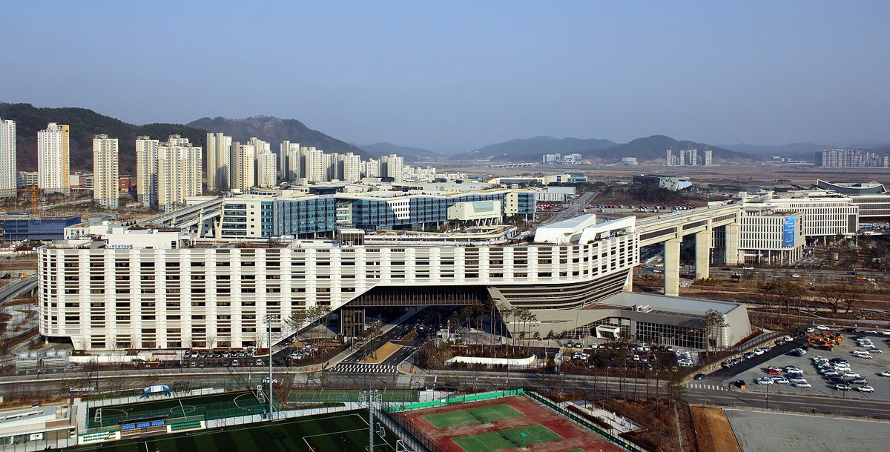

기후부, 2027년 예산 요구안에 햇빛소득마을 이차보전 29억 원·바람소득마을 26억 원 담아…송전단 ESS에는 5,724억 원 요구

재생에너지 2조6,600억 원·메가 프로젝트 1조9,000억 원을 국회에 요구…재생에너지 융자·금융지원 1조5,108억 원, 풍력보급지원사업 새로 만들어, 확정은 국회 심사 뒤
기후에너지환경부가 2027년도 예산으로 재생에너지 2조6,600억 원과 반도체 클러스터 등 메가 프로젝트 1조9,000억 원을 국회에 요구하면서, 주민이 함께 꾸리는 햇빛소득마을과 바람소득마을의 대출 이자 일부를 정부가 메워 주는 이차보전에 각각 29억 원과 26억 원을 요구안에 담은 것으로 28일 알려졌다. 두 이차보전은 전년보다 1.5배 넘게 늘려 요구한 재생에너지 융자·금융지원 1조5,108억 원 안에 들어 있으며, 같은 항목에 태양광 융자 1조3,598억 원, 풍력 융자 1,100억 원, 해상풍력 이차보전 30억 원도 포함됐다. 보급지원사업으로는 가정용 태양광 750억 원, 융복합지원 1,289억8,000만 원, 건물지원 500억6,700만 원, 주택지원 256억6,500만 원을 요구했고, 새로 만드는 풍력보급지원사업에 37억 원, 바나듐 레독스 흐름전지 같은 차세대 에너지저장장치(ESS)를 들이는 가파도 RE100 마을 고도화 사업에 57억6,800만 원을 넣었다. 연구개발 예산은 탠덤 태양전지와 영농형·건물일체형 모듈 등 태양광 분야 1,148억 원으로 처음 1,000억 원을 넘겼고 풍력 분야는 910억 원이다. 메가 프로젝트 전력 인프라 몫 1조5,128억 원에는 단일 연도로는 처음 5,000억 원대인 송전단 ESS 구축비 5,724억 원과 새로 넣은 한전 출자금 5,000억 원, 첨단 산단 변전소 선제 구축비 657억8,200만 원, 전기요금 복지할인 재정 보전 3,500억 원이 들어갔다. 이 금액들은 정부가 요구한 액수로 국회 예산 심사에서 늘거나 줄 수 있으며, 이차보전 29억 원이 몇 개 마을의 대출을 뒷받침할지는 알려지지 않았다.
시민에너지 관점
마을 발전소 몫이 설치 보조금이 아니라 대출 이자 보전 29억 원·26억 원으로 잡히고, 같은 요구안에서 송전단 ESS에 5,724억 원, 한전 출자에 5,000억 원이 잡힌 것은 정부 돈이 아직 대형 계통 쪽에 쏠려 있음을 보여 준다. 이자만 덜어 주면 담보와 자기자본이 없는 마을은 대출 문턱부터 넘기 어렵다는 걱정이 나올 수 있는데, 스코틀랜드 정부는 공동체 재생에너지 지원 제도(CARES)로 지역 공동체 사업을 초기 조사와 인허가 단계부터 보조금과 대출로 받쳐 왔다. 마을이 빌린 돈으로 지은 발전소는 이자 부담이 줄어든 만큼 수익이 주민 몫으로 남고, 그 수익이 해마다 마을 자산으로 쌓인다는 점에서 이차보전은 작아도 방향은 맞다. 국회 심사에서는 이차보전 규모를 지키는 데서 그치지 말고 마을 사업의 초기 비용 지원과 마을 단위 배전망 ESS 항목을 함께 따져 물어야 한다.
출처: 데일리한국 2026-10-28 안희민 원문 보기
韓国気候部、2027年予算要求案に太陽光所得村の利子補給29億ウォン・風力所得村26億ウォンを盛り込む…送電端ESSには5,724億ウォンを要求
再生可能エネルギー2兆6,600億ウォン・メガプロジェクト1兆9,000億ウォンを国会に要求…再エネ融資・金融支援1兆5,108億ウォン、風力普及支援事業を新設、確定は国会審査後
韓国の気候エネルギー環境部が2027年度予算として再生可能エネルギー2兆6,600億ウォンと、半導体クラスターなどメガプロジェクト1兆9,000億ウォンを国会に要求し、住民が共同で運営する太陽光所得村と風力所得村の融資利子の一部を政府が肩代わりする利子補給に、それぞれ29億ウォンと26億ウォンを要求案に盛り込んだことが28日わかった。二つの利子補給は、前年より1.5倍以上に増やして要求した再エネ融資・金融支援1兆5,108億ウォンに含まれ、同じ項目には太陽光融資1兆3,598億ウォン、風力融資1,100億ウォン、洋上風力の利子補給30億ウォンも入っている。普及支援事業としては家庭用太陽光750億ウォン、融複合支援1,289億8,000万ウォン、建物支援500億6,700万ウォン、住宅支援256億6,500万ウォンを要求し、新設する風力普及支援事業に37億ウォン、バナジウム・レドックスフロー電池など次世代エネルギー貯蔵システム（ESS）を導入する加波島（カパド）RE100村の高度化事業に57億6,800万ウォンを計上した。研究開発予算は、タンデム型太陽電池や営農型・建材一体型モジュールなど太陽光分野が1,148億ウォンで初めて1,000億ウォンを超え、風力分野は910億ウォンとなった。メガプロジェクトの電力インフラ分1兆5,128億ウォンには、単年度として初めて5,000億ウォン台となる送電端ESS構築費5,724億ウォン、新たに盛り込んだ韓国電力公社への出資金5,000億ウォン、先端産業団地の変電所先行構築費657億8,200万ウォン、電気料金の福祉割引に対する財政補填3,500億ウォンが入った。これらの金額は政府が要求した額で、国会の予算審査で増減する可能性があり、利子補給29億ウォンが何か所の村の融資を支えるのかは明らかにされていない。
市民エネルギーの視点
村の発電所向けの予算が設置補助金ではなく融資の利子補給29億・26億ウォンとして組まれ、同じ要求案で送電端ESSに5,724億ウォン、韓国電力公社への出資に5,000億ウォンが組まれたことは、政府の資金がまだ大型の系統側に偏っていることを示している。利子を軽くするだけでは担保や自己資本のない村は融資の入り口で行き詰まるとの懸念も出かねないが、スコットランド政府はコミュニティ・再生可能エネルギー支援制度（CARES）を通じ、地域コミュニティの事業を初期調査や許認可の段階から補助金と融資で支えてきた。村が借りた資金で建てた発電所は、利子負担が減った分だけ収益が住民の取り分として残り、その収益が毎年村の資産として積み上がるという点で、利子補給は小さくても方向は正しい。国会審査では利子補給の規模を守るだけでなく、村の事業の初期費用支援と村単位の配電網ESSの項目もあわせて問うべきだ。
出典: デイリー韓国 2026-10-28 アン・ヒミン 原文を読む
韩国气候部2027年预算要求案列入阳光收入村贴息29亿韩元、风力收入村26亿韩元…输电端储能要求5,724亿韩元
向国会要求可再生能源预算2万6,600亿韩元、超大型项目1万9,000亿韩元…可再生能源融资与金融支持1万5,108亿韩元，新设风电推广支持项目，须经国会审议方能确定
据28日了解，韩国气候能源环境部向国会提交2027年度预算要求，其中可再生能源预算2万6,600亿韩元、半导体集群等超大型项目预算1万9,000亿韩元，并在要求案中列入由政府补贴居民共同经营的阳光收入村和风力收入村部分贷款利息的贴息资金，分别为29亿韩元和26亿韩元。这两项贴息包含在比上年增加1.5倍以上的可再生能源融资与金融支持要求额1万5,108亿韩元之中，同一项目还包括光伏融资1万3,598亿韩元、风电融资1,100亿韩元和海上风电贴息30亿韩元。推广支持项目方面，要求户用光伏750亿韩元、融合支持1,289亿8,000万韩元、建筑支持500亿6,700万韩元、住宅支持256亿6,500万韩元；新设的风电推广支持项目列入37亿韩元，引进钒液流电池等新一代储能系统（ESS）的加波岛RE100村升级项目列入57亿6,800万韩元。研发预算中，叠层太阳能电池及农光互补、光伏建筑一体化组件等光伏领域为1,148亿韩元，首次突破1,000亿韩元，风电领域为910亿韩元。超大型项目电力基础设施部分1万5,128亿韩元中，包括单一年度首次达到5,000亿韩元级别的输电端储能建设费5,724亿韩元、新列入的韩国电力公社出资5,000亿韩元、尖端产业园区变电站提前建设费657亿8,200万韩元，以及电费福利折扣财政补偿3,500亿韩元。上述金额均为政府要求额，可能在国会预算审议中增减，29亿韩元贴息能支持多少个村庄的贷款目前尚未公布。
市民能源视角
村级电站的份额不是安装补贴，而是29亿和26亿韩元的贷款贴息；而同一份要求案中，输电端储能列入5,724亿韩元，向韩国电力公社出资列入5,000亿韩元，这说明政府资金仍然偏向大型电网一侧。有人可能担心，只减轻利息，缺乏担保和自有资本的村庄连贷款门槛都难以跨过；苏格兰政府则通过社区与可再生能源支持计划（CARES），从前期调查和审批阶段起就以补助和贷款支持地方社区项目。村庄借款建成的电站，利息负担减少多少，留给居民的收益就多多少，这些收益每年积累为村庄资产，因此贴息规模虽小，方向是对的。国会审议时不应只守住贴息规模，还应一并追问村级项目前期费用支持和村级配电网储能项目。
来源: Daily Hankook 2026-10-28 Ahn Hee-min 查看原文
Korea's climate ministry seeks 2.9 billion won in interest subsidies for Sunlight Income Villages and 2.6 billion won for Wind Income Villages in 2027 budget request, alongside 572.4 billion won for transmission-side ESS
Requests to the National Assembly total 2.66 trillion won for renewables and 1.9 trillion won for mega projects; renewable loans and financial support of 1.5108 trillion won and a new wind deployment programme, with final figures set only after parliamentary review
South Korea's Ministry of Climate, Energy and Environment has asked the National Assembly for 2.66 trillion won for renewable energy and 1.9 trillion won for mega projects such as semiconductor clusters in its 2027 budget, and its request includes 2.9 billion won and 2.6 billion won respectively for interest subsidies, under which the government covers part of the loan interest of resident-run Sunlight Income Villages and Wind Income Villages, it emerged on 28 October. Both subsidies sit within a 1.5108 trillion won request for renewable loans and financial support, more than 1.5 times the previous year, which also covers 1.3598 trillion won in solar loans, 110 billion won in wind loans and 3 billion won in interest subsidies for offshore wind. For deployment support, the ministry requested 75 billion won for household solar, 128.98 billion won for converged projects, 50.067 billion won for buildings and 25.665 billion won for homes, plus 3.7 billion won for a new wind deployment programme and 5.768 billion won to upgrade the RE100 village on Gapado island, including next-generation energy storage systems (ESS) such as vanadium redox flow batteries. Research and development funding for solar, including tandem cells and agrivoltaic and building-integrated modules, tops 100 billion won for the first time at 114.8 billion won, with 91 billion won for wind. The 1.5128 trillion won for power infrastructure for mega projects includes 572.4 billion won to build transmission-side ESS, the first time a single year's spending on it has reached the 500 billion won range, a new 500 billion won capital injection into KEPCO, 65.782 billion won to build substations ahead of new high-tech industrial complexes and 350 billion won to compensate for welfare discounts on electricity bills. These figures are the government's request and may rise or fall during the National Assembly's budget review, and it has not been disclosed how many villages' loans the 2.9 billion won interest subsidy would support.
Citizen Energy View
That the share for village power plants takes the form of 2.9 billion and 2.6 billion won in loan interest subsidies rather than installation grants, while the same request earmarks 572.4 billion won for transmission-side ESS and 500 billion won for a KEPCO capital injection, shows that public money is still tilted towards the large-scale grid. Some may worry that cutting interest alone will leave villages without collateral or equity stuck at the loan threshold, but the Scottish Government's Community and Renewable Energy Scheme (CARES) has backed local community projects with grants and loans from the early study and consenting stages. A plant a village builds with borrowed money keeps more of its revenue for residents as interest costs fall, and that revenue builds up as village assets year after year, so the subsidy is small but points the right way. In its budget review, the National Assembly should not stop at protecting the size of the interest subsidies but should also press for support for villages' early-stage costs and for village-level distribution-grid ESS.
Source: Daily Hankook 2026-10-28 Ahn Hee-min Read the original